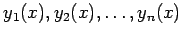
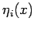
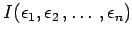
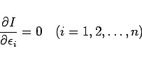
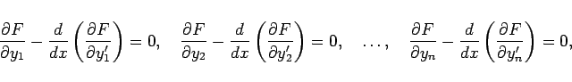

Inhalt Index DeskTop Bronstein

 Variationsrechnung Variationsaufgaben mit Funktionen einer Veränderlichen
Variationsrechnung Variationsaufgaben mit Funktionen einer Veränderlichen


Das Funktional der Variationsaufgabe habe die Form
wobei die gesuchten Funktionen  für x=a und x=b vorgegebene Werte annehmen sollen. Man wählt n zweimal stetig differenzierbare Vergleichsfunktionen
wobei die Funktionen  in den Randpunkten verschwinden sollen. Mit (10.35) geht
(10.34) in  über, und aus den notwendigen Bedingungen
|  | (10.36) |
für Extremwerte von Funktionen von mehreren Veränderlichen ergeben sich die n EULERschen Differentialgleichungen
|  | (10.37) |
deren Lösungen die vorgegebenen Randbedingungen erfüllen müssen.